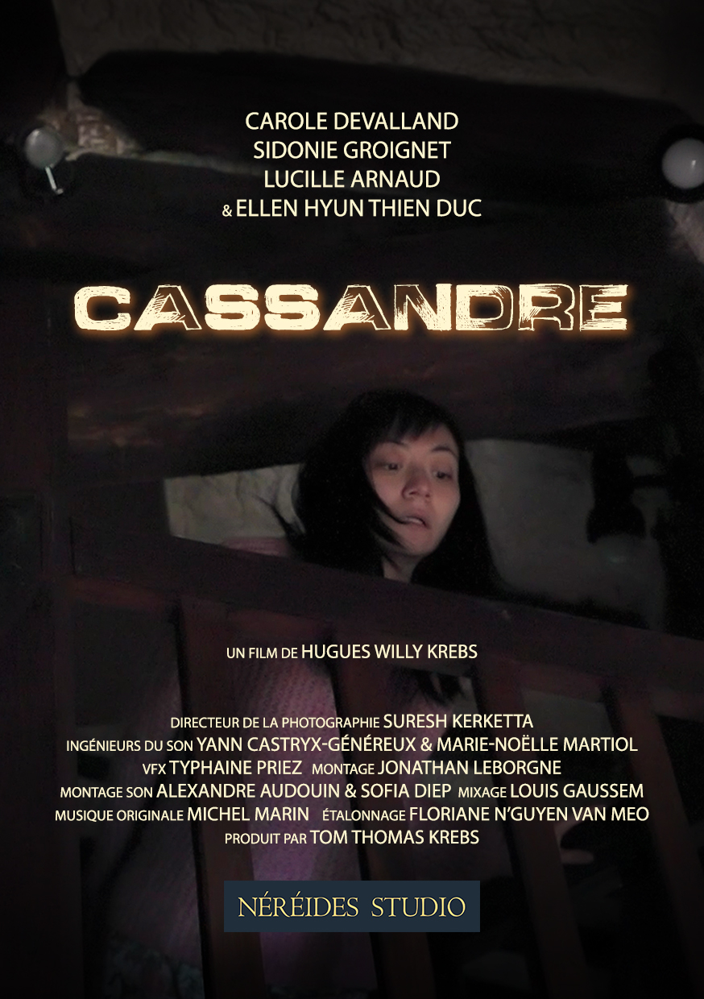
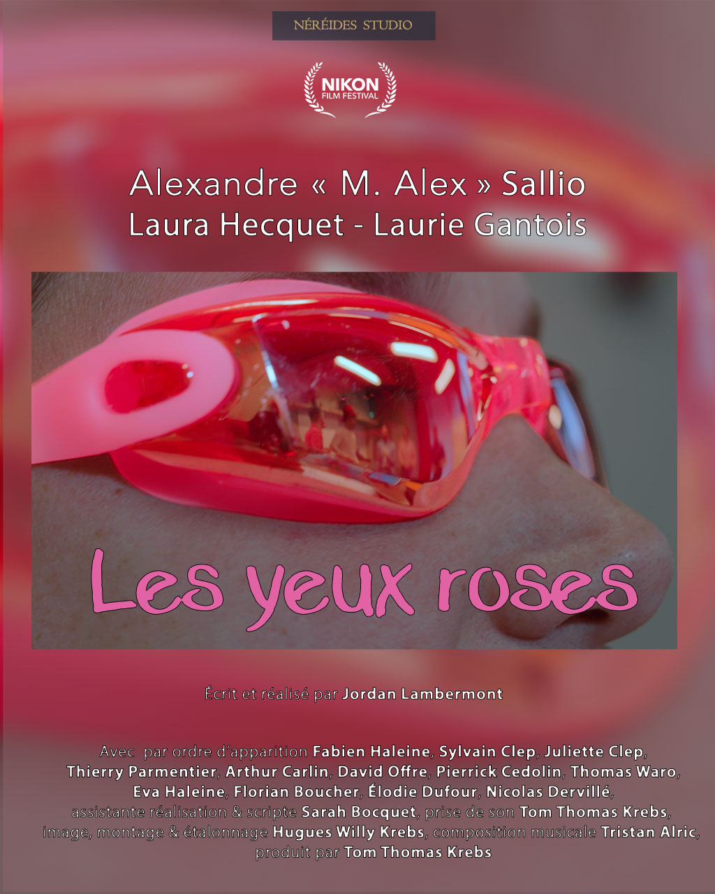
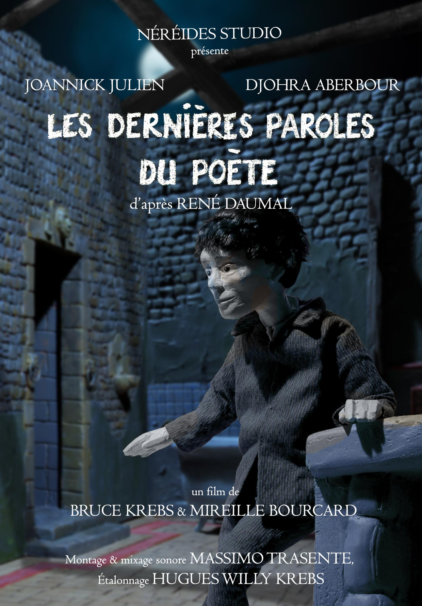
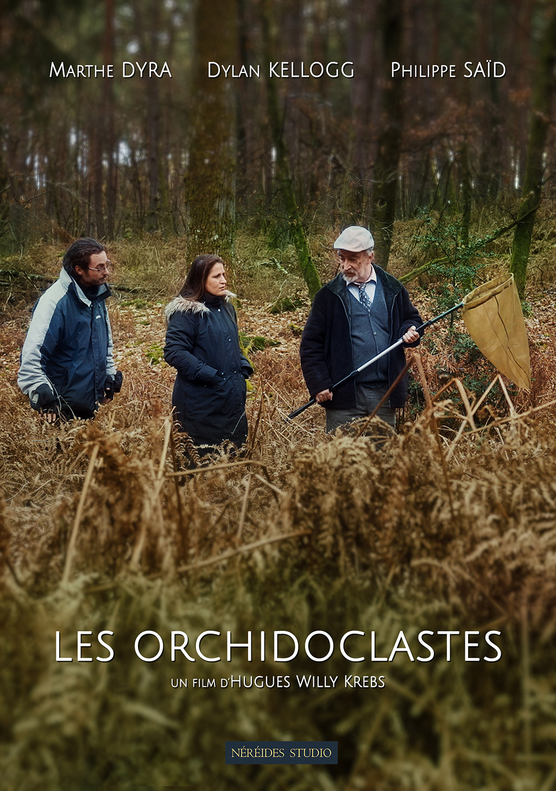
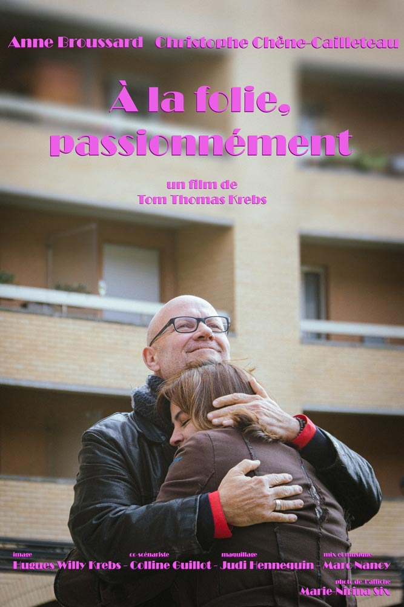
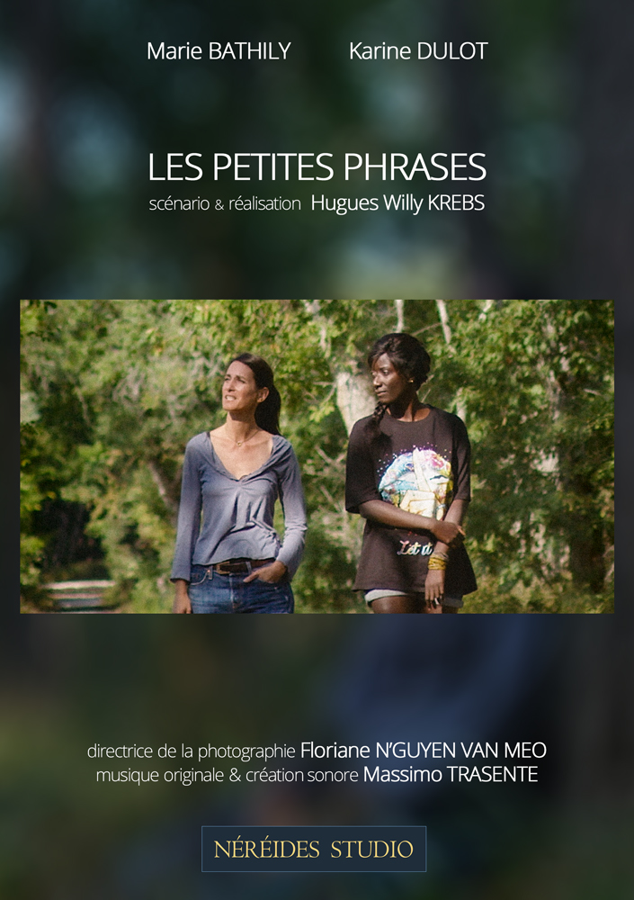

Depuis 2024, Néréides Studio fait éclore des auteurs aux projets humanistes, engagés et positifs, à la croisée des genres.
Films en distribution

Cassandre
2026 – Drame fantastique, 20min
Réalisé par Hugues Willy Krebs
Visa : 162.981

Les yeux roses
2025 – Comédie musicale, 2min
Réalisé par Jordan Lambermont
Visa : en cours

Les dernières paroles du poète
2025 – Animation, 8min
Réalisé par Mireille Boucard & Bruce Krebs
Visa : 165.518
Distribution : T4Culture

Les Orchidoclastes
2025 – Comédie, 8min
Réalisé par Hugues Willy Krebs
Visa : 165.647
Distribution : T4Culture
Prix du public, Festival des Canes, Pussay, octobre 2025

À la folie, passionnément
2024 – Comédie, 4min
Réalisé par Tom Thomas Krebs
Visa : 163.309

Les petites phrases
2024 – Thriller fantastique, 11min
Réalisé par Hugues Willy Krebs
Visa : 163.239
Delhi Shorts International Film Festival, Inde, 13ème édition, 2024.
Omovies - International LGBT+ Questioning Film Festival, Naples, Italie, 2024
Films en production
The Dispute
Science-fiction, 15min
Scénario et réalisation : Hugues Willy Krebs
Films en financements
Bleu Horizon
Drame historique, 10min
Scénario et réalisation : Maximilien Diaz
Saga
Drame fantastique, 20min
Scénario : Tom Thomas Krebs & Hugues Willy Krebs
Réalisation : Hugues Willy Krebs
U Casteddu
Drame fantastique, 15min
Scénario : Anne-Sophie Soldaini & Thomas Chapelle
Réalisation : Anne-Sophie Soldaini
Co-production avec Sisteria Films – Lou Camille
G.R.E.C. Porto Vecchio, novembre 2025
Projets en développement
Chantier familial
Comédie dramatique, 15min
Scénario et réalisation : Justine Brousset
Co-production avec Parallell Cinema – David Steiner
La dernière prise
Drame, ~25min
Scénario et réalisation : Cedrick Spinassou
Co-production avec Denan Production – David Yol
La fête des Pères
Drame, 20min
Scénario et réalisation : Yaël Yermia
Retour à l'accueil